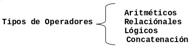
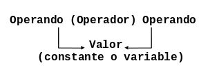

Expresiones
En este capítulo aprenderas la relación entre los tipos de datos y las operaciones válidas que se pueden realizar con ellos. Los conceptos a revisar son:
- expresiones,
- concatenación,
- operaciones aritméticas,
- operaciones relacionales,
- operaciones lógicas,
- prioridad de operaciones.
Tipos de expresiones
Las expresiones son combinaciones de constantes, variables, símbolos de
operación, y paréntesis. Por ejemplo:
a + (b + 3) / c.
Cada expresión resulta en un valor que se determina al evaluar las operaciones indicadas usando los valores de las variables y constantes implicadas.
Una expresión consta de operadores y operandos. Según sea el tipo de datos que manipulan, las expresiones se clasifican en:
- Aritméticas
- Relacionales
- Lógicas y
- De concatenación
Operadores y Operandos
Los operadores son elementos que relacionan de forma diferente, los valores de una o mas variables y/o constantes. Es decir, los operadores nos permiten manipular valores y se dividen en cuatro grupos como se muestra en la siguiente Figura:

Concatenación
Una operación de concatenación involucra dos o mas valores alafanuméricos o
cadenas, cuyo contenido se va agregando al resultado final, evaluando de
izquierda a derecha. Generalmente representamos esta operación con el operador
+, aunque algunos lenguajes de programación usan un símbolo diferente. Por
ejemplo:
"Hola " + "mundo" dará como resultado "Hola mundo"
Operadores Aritméticos
La forma general que tiene una operación aritmética que opera sobre dos valores se ilustra en la siguiente Figura:

Los operadores aritméticos son válidos para tipos de datos enteros o reales. Si ambos son enteros, el resultado es entero; si alguno de ellos es real, el resultado es real. Las operaciones aritméticas son las siguientes:
- Suma:
+ - Resta:
- - Multiplicación:
* - División:
/ - Módulo (residuo de la división entera):
% - Exponenciación:
^
Ejemplos:
| Expresión | Resultado |
|---|---|
7 / 2 |
3.5 |
12 % 7 |
5 |
4 + 2 * 5 |
14 |
3 ^ 2 |
9 |
Prioridad de los Operadores Aritméticos
Las operaciones aritméticas deben evaluarse de acuerdo a la importancia del operador, es decir, de acuerdo a su prioridad, de la siguiente forma:
- Todas las expresiones entre paréntesis se evalúan primero.
- Las expresiones con paréntesis anidados se evalúan de adentro hacia afuera, el paréntesis más interno se evalúa primero.
- Dentro de una misma expresión los operadores se evalúan en el siguiente
orden.
- Exponenciación:
^ - Multiplicación, división, modulo:
*,/,% - Suma y resta:
+,-
- Exponenciación:
- Los operadores en una misma expresión con igual nivel de prioridad se evalúan de izquierda a derecha.
Ejemplos
4 + 2 * 5 = 14
4 + 10 = 14
23 * 4 / 2 = 46
92 / 2 = 46
3 + 5 * (10 - (2 + 4)) = 23
3 + 5 * (10 - 6) = 3 + 5 * 4 = 3 + 20 = 23
3 + 5 - 14 / 2 = 1
3 + 5 - 7 = 8 - 7 = 1
2 * (1 + 3 * 4) = 26
2 * (1 + 12) = 2 * 13 = 26Operadores Relacionales
Los operadores relacionales se utilizan para establecer una relación entre dos valores. Los valores se comparan entre sí y esta comparación produce un resultado de certeza o falsedad (verdadero o falso).
Los operadores relacionales deben comparan valores del mismo tipo (numéricos o cadenas), tienen el mismo nivel de prioridad en su evaluación y tienen menor prioridad que los operadores aritméticos.
Las operaciones relacionales son las siguientes:
>Mayor que<Menor que>=Mayor o igual que<=Menor o igual que!=Diferente==Igual
Ejemplos
Si a = 10, b = 20 y c = 30.
a + b > c
Falso
a - b < c
Verdadero
a - b == c
Falso
a * b != c
Verdadero
Ejemplos no válidos:
a < b < c
10 < 20 < 30
'hola' < 30
Operadores Lógicos
Los operadores lógicos se utilizan para establecer relaciones entre valores lógicos. Estos valores pueden ser resultado de una expresión relacional.
Las operaciones lógicas son las siguientes:
- Conjunción: AND,
& - Disyunción: OR,
| - Negación: NOT,
!
A continuación se muestran las tablas de verdad para las operaciones lógicas.
| Operando 1 | Operador | Operando 2 | Resultado |
|---|---|---|---|
V |
AND |
V |
V |
F |
AND |
V |
F |
V |
AND |
F |
F |
F |
AND |
F |
F |
| ---------- | -------- | ---------- | --------- |
V |
OR |
V |
V |
F |
OR |
V |
V |
V |
OR |
F |
V |
F |
OR |
F |
F |
| ---------- | -------- | ---------- | --------- |
NOT |
V |
F |
|
NOT |
F |
V |
Ejemplos: Sea a = 10, b = 20 y c = 30.
a < b & b < c
10 < 20 & 20 < 30
V & V
VPrioridad de los Operadores Lógicos
Los operadores relacionales se evalúan en el siguiente orden.
- Not
! - And
& - OR
|
Prioridad de los Operadores en General
A continuación se hace un resumen de la prioridad de los operadores aritméticos, relacionales y lógicos.
-
() -
^ -
*,/,%,! -
+,-,& >,<,>=,<=,!=,==,|
Ejemplos:
Sean a = 10, b = 12, c = 13, y d = 10.
((a > b) | (a < c)) & ((a == c) | (a >= b))
((10 > 12) | (10 < 13)) & ((10 == 13) | (10 >= 12))
( F | V ) & ( F | F )
V & F
F((a >= b) | (a < d)) & ((a >= d) & (c > d ))
((10 >= 12) | (10 < 10)) & ((10 >= 10) & (13 > 10))
( F | F ) & ( V & V )
F & V
F!(a == c) & (c > b)
!(10 == 13) & (13 > 12)
!F & V
V & V
VEjercicios propuestos
- ¿Que es una expresión y cuál es su clasificación?
- Realice las siguientes operaciones aritméticas:
2 + 9 * 3 - 100 / 5 ((6 * 10 - 45 + 80) / 10) / (((12 + 3) * 5 -45) / 9) (((2^10 - 1000) + 76) / (120 - 90 + (25 * 4 / 20))) / 5 + 10 (20 - 40 + (25 / 5 * 20) / (2 * 10 - 1000 / 50) + 40) / ((6 + 10) / (20 * 10 / 50 * 2)) - Realice las siguientes operaciones relacionales, con
a = 10,b = 5yc = 20:(2 * a / 2 * b) / (a - 5 * a * b + c) > (a + 2 * b + c) - (b + c * 8) (2 * a - 5 * b) / (4 * c - 5 * a * b + 10) <= (a * b * c) / (a + b + c) (10 * a + 5 + b) / (c - 5 * a * b + 10) != (a + b * c) - (a * b + c) / (5 * a) 10 / (a + b + c) + 3 * a * b * c == 10 * c - 2 * a * b + 6 - Realice las siguientes operaciones lógicas, con
a = 1,b = 2yc = 4:(2 * a) / (5 * b + 10) > 3 * a + c && 3 * a * b * c >= 200 a / (5 * b) <= 3 * a + c || a * b * c >= 200 && !(a + b * c >= 350 * c) a / (b + c) != 10 * b + a || a + 5 * b * a >= 5 * b / 2 && !(a + b != 2 * c) (2 + a) / (5 * b + c) >= 3 + 2 * a && !(5 + 2 * c < 3 * a) && !(3 + a <= 5 * b + c)